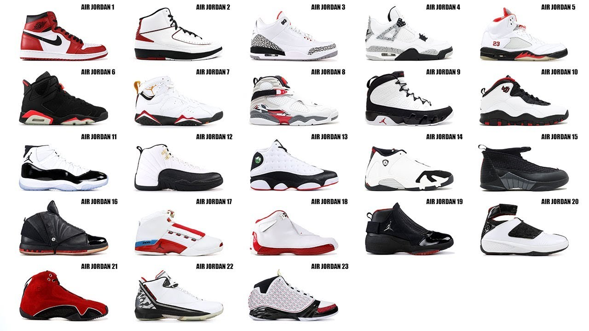

El primer modelo de Air Jordan salió a la venta en el año 1985. A partir de ese momento comenzó la fiebre por estas zapatillas, que continúa hasta la actualidad. Hasta el día de hoy, ya se han presentado en el mercado 36 modelos distintos de las Air Jordan.
Prácticamente un modelo por año, aqui se les mostrara los pares mas notorios de esta marca:

En la imagen se puede notar varios modelos del calzado Air Jordan, desde el modelo numero uno, hasta el numero veintitres.
Air Jordan sigue en produccion hasta el momento, realizando, produciendo y lanzandose a la venta pares cada mes al publico.